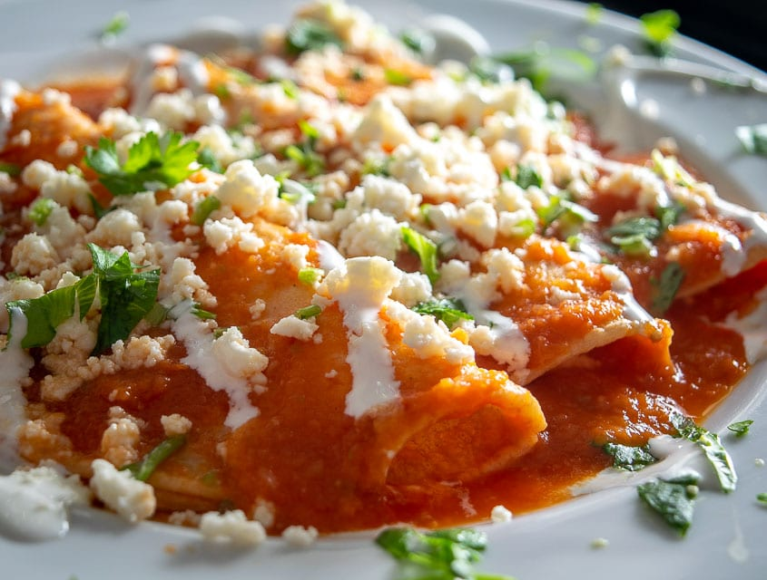

Entomadatas Recipe

Entomatadas are similar to enchiladas. They are my favorite comfort meal,
they are quick to make and do not need too many ingredients.
Ingredients
2 tomatoes
2 jalapeno peppers
4 garlic cloves
1 tbsp vegetable oil
1 onion finely diced
salt
12 corn tortillas
queso fresco
3 tbsp vegetable oil to fry tortillas
Steps
- Place tomatoes, the jalapeno pepper, and garlic cloves in a saucepan
and cover with water. Cook over medium heat for about 15- 20 minutes until soft.
- Mix the ¼ cup of the onion with the crumbled cheese and set aside.
- Once tomatoes and pepper are cooked, place in a blender and process until you
have a very smooth sauce.
- Heat 1 Tablespoon of vegetable oil in a skillet over a medium high heat. Add the
rest of the onion and cook until transparent and slightly browned, about 5 minutes.
- Add the tomato sauce to the skillet and cook for about 2 minutes, season with salt,
and then turn the heat to low and simmer for about 6-8 minutes.
- In a separate skillet, heat the rest of the oil over medium heat and briefly fry the
tortillas one by one and place on a plate with paper towels to absorb any excess oil.
- Once you fried all the tortillas, dip them one by one into the warm tomato sauce. Make
sure to flip the tortilla to cover both sides with the tomato sauce.
- Place tortilla on a plate and spoon some cheese and onion mix. Fold the tortilla and
proceed with the rest of the tortillas. Once you have all your entomatadas ready, spoon
some of the leftover sauce over them and top with more cheese and onion mix.